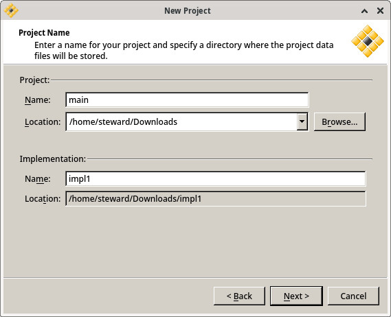
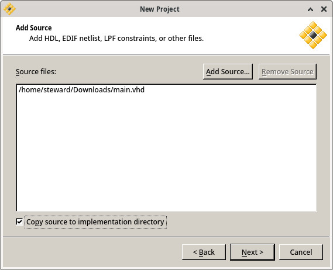
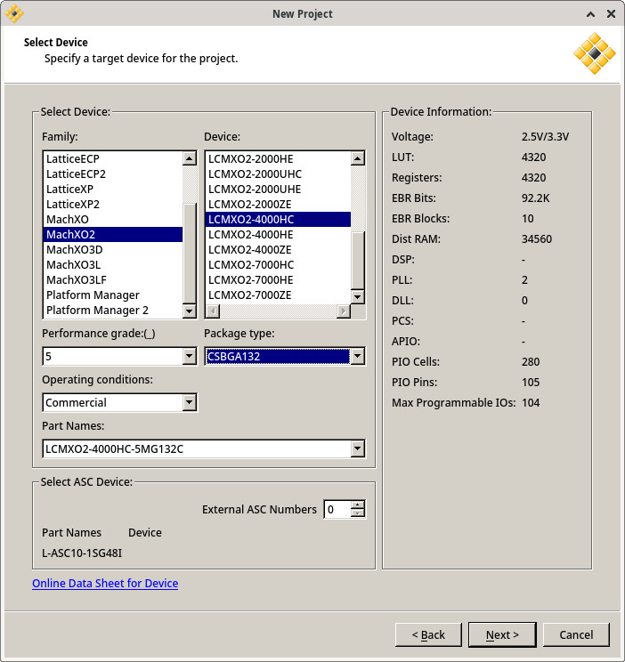
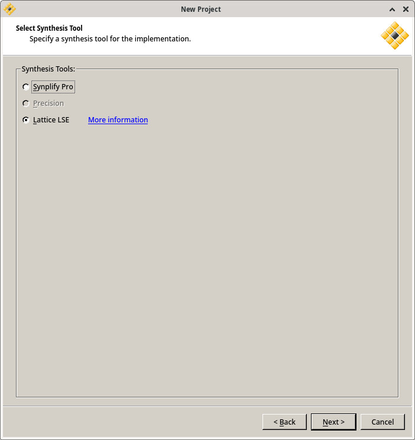
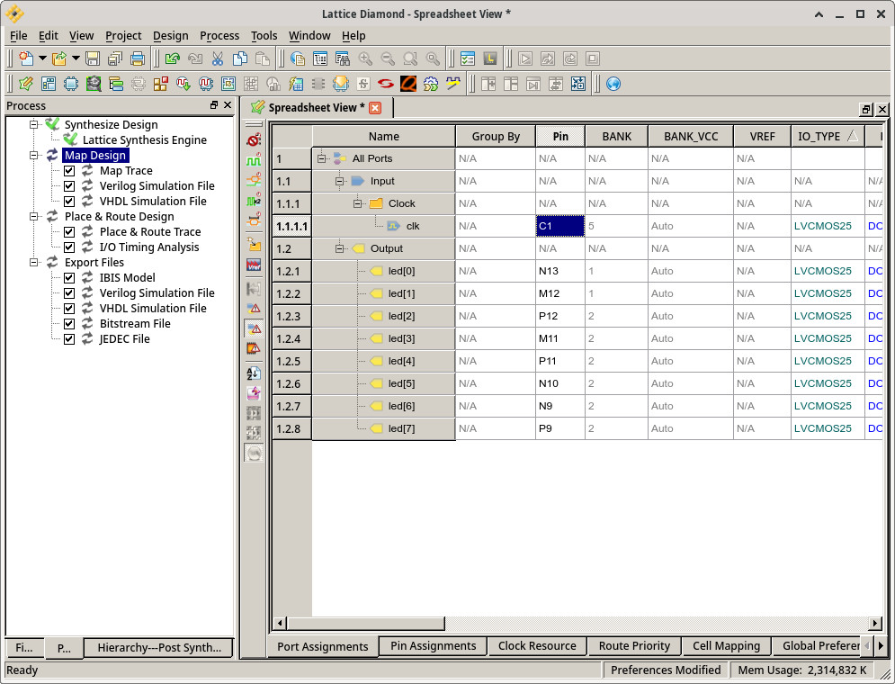
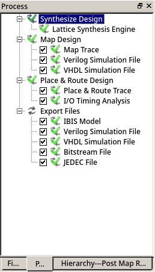
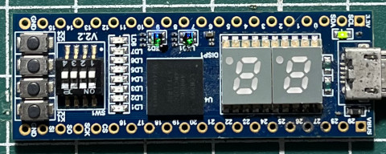
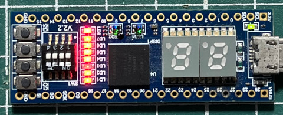

Name
參考資訊：
https://www.stepfpga.com/doc/step-mxo2%E5%85%A5%E9%97%A8%E6%95%99%E7%A8%8B
main.vhd
library ieee;
use ieee.std_logic_1164.all;
entity main is
port(
clk : in std_logic;
led : out std_logic_vector(0 to 7) := "11111111"
);
end main;
architecture logic of main is
signal val: std_logic_vector(0 to 7) := "11111111";
signal clk_cnt : integer := 0;
begin
process(clk) is
begin
if (clk'event and clk = '1') then
clk_cnt <= clk_cnt + 1;
if (clk_cnt = 12000000) then
clk_cnt <= 0;
led <= val;
val <= not val;
end if;
end if;
end process;
end logic;
New => Project
Name








$ openFPGALoader -m -d /dev/ttyUSB0 main_impl1.jed
empty
write to ram
No cable or board specified: using direct ft2232 interface
Can't read iSerialNumber field from FTDI: considered as empty string
Jtag frequency : requested 6.00MHz -> real 6.00MHz
Open file DONE
Parse file DONE
Enable configuration: DONE
SRAM erase: DONE
Enable configuration: DONE
Flash erase: DONE
Writing data: [==================================================] 100.00%
Done
Write program Done: DONE
Disable configuration: DONE
完成

